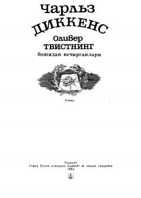

OTYetim bola Oliver Tvistning mashaqqatli hayoti va boshidan kechirgan og'ir sinovlari haqidagi asar.
Ushbu roman yetim bola Oliver Tvistning og'ir bolaligi, qashshoqlik va jinoyat olami girdobidagi boshidan kechirgan mashaqqatli sarguzashtlarini hikoya qiladi. Asar insoniylik, rahm-shafqat va adolat g'oyalarini ilgari surib, jamiyatdagi illatlarni fosh etadi.